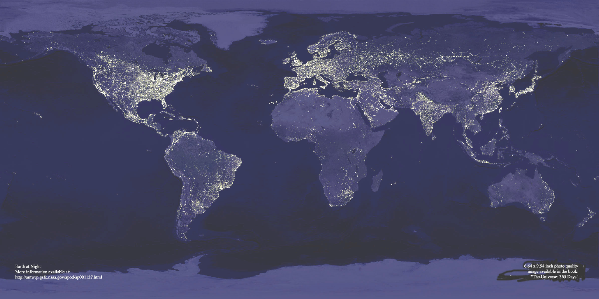

Leia o planisfério, em que é mostrada uma imagem noturna da superfície terrestre, obtida a partir
de imagens de satélite:

http://antwrp.gsfc.nasa.gov/apod/1Image/0011/earthlights_dmsp_big.jpg (Acessado em 21 set. 2009).
Com base na leitura desse planisfério, é CORRETO afirmar que as regiões continentais em que
se verifica luminosidade noturna mais intensa
-
abrigam os espaços de economia mais dinâmica do mundo contemporâneo, onde se localizam os
principais centros de decisão que comandam a atual ordem mundial.
-
expressam a divisão do Planeta em dois hemisférios — o Leste e o Oeste — que, apesar de
integrados à economia-mundo, revelam indicadores sociais discrepantes.
-
comprovam que o Planeta pode abrigar o dobro de seu atual contingente populacional, desde que
mantido o padrão de consumo praticado pela sociedade contemporânea.
-
registram fluxos reduzidos de informação, de pessoas, de mercadorias e de capitais, tendo em vista
a saturação de suas redes de circulação, alcançada no início do século XXI.
-
substituíram suas tradicionais fontes de energia não renováveis, historicamente empregadas na
geração de eletricidade, por alternativas limpas e não poluentes.
{kind=link}